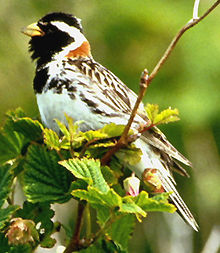
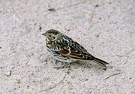
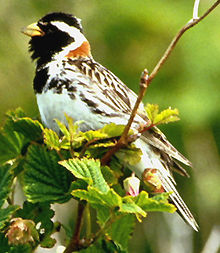
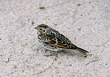

| Lapland Longspur | |
|---|---|
|  | |
| Breeding male | |
|  | |
| Female | |
| Conservation status | |
| Binomial name | |
| Calcarius lapponicus (Linnaeus, 1758) |
| Lapland Longspur | |
|---|---|
|  | |
| Breeding male | |
|  | |
| Female | |
| Conservation status | |
| Binomial name | |
| Calcarius lapponicus (Linnaeus, 1758) |
The Lapland Longspur or Lapland Bunting, Calcarius lapponicus, is a passerine bird in the bunting family Emberizidae, a group separated by most modern authors from the Fringillidae (Old World finches).
It breeds across Arctic Europe and Asia and in Canada and the northernmost USA. It is migratory, wintering in the Russian steppes, the southern USA, Northern Scandinavian arctic areas and down to coastal Southern Sweden, Denmark and Great Britain. This is the only Eurasian species of the longspur buntings, and while it probably did not evolve there, it has been present in Eastern Europe for at least about 30,000 years (Tomek & Bocheński 2005).
The Lapland Longspur is a robust bird, with a thick yellow seed-eater's bill. The summer male has a black head and throat, white eyestripe, chestnut nape, white underparts, and a heavily streaked black-grey back. Other plumages have a plainer orange-brown head, a browner back and chestnut nape and wing panels.
The most common flight call is a hard "prrrrt" usually preceded by a more nasal "teeww". When breeding, it also makes a softer "duyyeee" followed by a pause and a "triiiuuu"; both sounds alternate.
It breeds in wet areas with birch or willow, and or bare mountains, and winters on cultivated land or coasts. The bird is often seen close to the tree line, and likes to feed in mixed-species flocks in winter. Its natural food consists of insects when feeding young, and otherwise seeds. The nest is on the ground. 2-4 eggs are laid.

{kind=link}
_1996-07-25.jpg){kind=link}